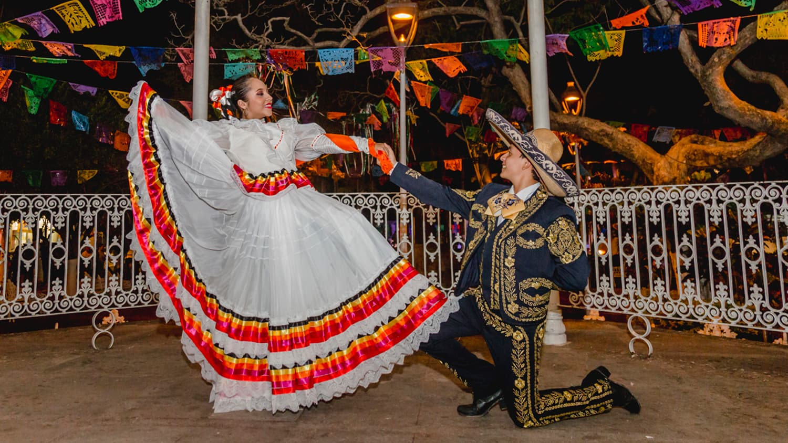

La danza del cortejo mexicano
Jarabe Tapatío
Jarabe Tapatío
La danza del cortejo mexicanoArte popular que representa el sentido de identidad nacional favorecida por los esfuerzos post-revolucionarios. El encanto y la gracia de esta danza, junto con el color vivo de la vestimenta, ofrecen un collage vertiginoso de vitalidad que ha capturado corazones en México y el mundo.
La danza celebra el cortejo romántico. Interpretada por un hombre y una mujer: él invita a un mundo de afecto íntimo; ella rechaza sus avances, pero se rinde mientras bailan. El baile cierra cuando ambos desaparecen detrás del sombrero, sellando su interés mutuo con un beso.
China Poblana
Amplio conjunto de falda y blusa con decoración colorida, inspirado en la princesa india del siglo XVII Mirra, cuya ropa exótica cautivó a las mujeres mexicanas.
Traje de Charro
Traje negro con bordados metálicos y botones de plata en las perneras. El nombre "jarabe" proviene del árabe "Xarab" — mezcla de vals, polka y danzas indígenas.